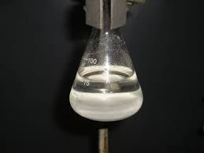
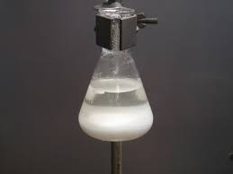
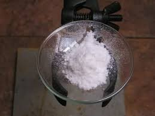
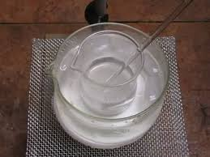
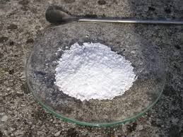

Ogni tanto accenno nel blog a quelli che io chiamo "sporcaprovette", cioè a quegli strani individui che hanno come hobby la chimica sperimentale.
L'aggettivo strano (nel senso di poco comune) è proprio il minimo che si possa pensar di assegnare ad una così sparuta categoria di persone: la chimica come hobby!
Chi, di questi tempi, si sognerebbe di passare il proprio tempo mescolando introvabili reagenti per tentare di attaccare pezzetti di molecole uno all'altra?
Quello dev'essere proprio un tipo strano...
Eppure, seppur pochissimi (pochissimi elevato al cubo!) questi tipi esistono.
Si contano sulle dita di un paio di mani, ma esistono.
(Mi riferisco ovviamente agli sporcaprovette home-lab, non ai tanti che lo fanno durante il periodo di studio o per motivi di lavoro, questi non rientrano nella mia classifica).
Uno di quelli bravi è l'amico Massimo, anche lui animato da una ammirevole passione per la tavola periodica, e si dà veramente da fare in maniera sempre più "professionale".
Mi ha dato lo spunto per fare una buona sintesi, presa dalla bibliografia ma con qualche personale variante nella fase finale; è una sintesi facile ma abbastanza singolare perchè coinvolge in maniera fondamentale un sale assai poco ricorrente sia in chimica organica che inorganica, il cianato alcalino.
Da parte mia, come ulteriori personali varianti oltre a quelle di Massimo, ho usato una quantità maggiore di acetone in due fasi intermedie anzichè una e KOCN anzichè NaOCN.
Le reazioni, prese dal Vogel, sono le seguenti:
2 NH2NH2•H2SO4 + Na2CO3 --> (NH2NH2)2•H2SO4 + Na2SO4 + H2CO3
(NH2NH2)2•H2SO4 + 2NaOCN --> 2H2N-CO-NH-NH2 + Na2SO4
Materiale occorrente:
- idrazina solfato NH2-NH2.H2SO4
- potassio cianato KOCN
- acetone CH3-CO-CH3
- sodio carbonato Na2CO3
- acido cloridrico HCl
- etanolo CH3-CH2-OH
- etere C2H5-O-C2H5
- vetreria opportuna
- In una beuta da 100 ml sciogliere 6,5 g di solfato di idrazina e 2,7 g di sodio carbonato in 30 ml di acqua; si ha svolgimento di CO2 per parziale deacidificazione dell'idrazina.
Portare a ebollizione e lasciar raffreddare a 50-55°
A questo punto aggiungere una soluzione di 4,3 g di potassio cianato in 50 ml di acqua, mescolare e lasciar riposare una notte.
Si ottiene una soluzione limpida ed un precipitato bianco di idrazodicarbonamide come reazione secondaria.


Una volta filtrato, possiamo tenere anche questo prodotto bianco cristallino in quantità recuperabile (1 g).
Porre il filtrato in una beuta su agitatore magnetico e aggiungere 16 ml di acetone, lasciando mescolare per 4-5 ore per favorire la formazione dell'acetone semicarbazone sotto forma di un precipitato bianco lattiginoso.
Filtrare il semicarbazone, aggiungere al filtrato alti 10 ml di acetone, mescolare per un'altra ora e rifiltrare, unendo i due precipitati.
Lasciar seccare all'aria l'acetone semicarbazone.

Sciogliere, scaldando a 50-60°, il semicarbazone nella minima quantità di HCl al 30% (ne servono circa 6 ml); si libera l'acetone, che evapora completamente.

Raffreddando in ghiaccio, aggiungere 15 ml di etanolo ed altrettanti di etere, mescolando bene; la semicarbazide cloridato precipita sotto forma di polvere bianca cristallina.
Lasciar asciugare facilmente all'aria, resa 3,3 g, circa il 60 %
La semicarbazide è un reagente per aldeidi e chetoni perchè forma prodotti di condensazione cristallini con un p.f. ben definito e facilmente separabili, che possono poi rigenerare il prodotto carbonilico per idrolisi acida.

Per dare a Cesare quel ch'è di Cesare, anche questa volta ci sono dei ringraziamenti da fare: vanno all'amico Massimo per lo spunto a questa interessante sintesi.